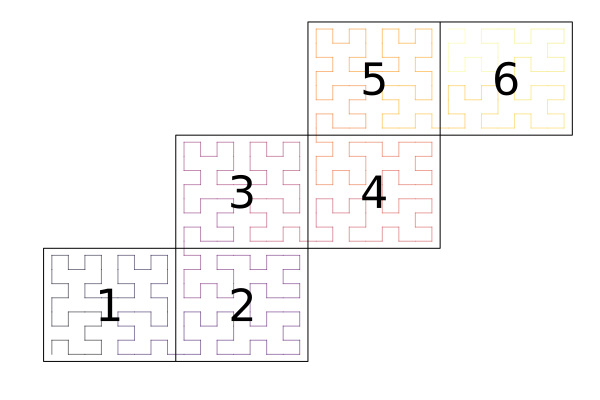

API
DataLayouts
ClimaCore.DataLayouts — ModuleClimaCore.DataLayoutsNotation:
i,jare horizontal node indices within an elementkis the vertical node index within an elementfis the field index (1 if field is scalar, >1 if it is a vector field)vis the vertical element index in a stackhis the element stack index
Data layout is specified by the order in which they appear, e.g. IJKFVH indexes the underlying array as [i,j,k,f,v,h]
ClimaCore.DataLayouts.DataF — TypeDataF{S, A} <: Data0D{S}Backing DataLayout for 0D point data.
ClimaCore.DataLayouts.IF — TypeIF{S, Ni, A} <: DataSlab1D{S, Ni}Backing DataLayout for 1D spectral element slab data.
Nodal element data (I) are contiguous for each S datatype struct field (F) for a single element slab.
A DataSlab1D view can be returned from other Data1D objects by calling slab(data, idx...).
ClimaCore.DataLayouts.IJF — TypeIJF{S, Nij, A} <: DataSlab2D{S, Nij}Backing DataLayout for 2D spectral element slab data.
Nodal element data (I,J) are contiguous for each S datatype struct field (F) for a single element slab.
A DataSlab2D view can be returned from other Data2D objects by calling slab(data, idx...).
ClimaCore.DataLayouts.VF — TypeVF{S, A} <: DataColumn{S}Backing DataLayout for 1D FV column data.
Column level data (V) are contiguous for each S datatype struct field (F).
A DataColumn view can be returned from other Data1DX, Data2DX objects by calling column(data, idx...).
ClimaCore.DataLayouts.IFH — TypeIFH{S, Ni, A} <: Data1D{S, Ni}Backing DataLayout for 1D spectral element slabs.
Element nodal point (I) data is contiguous for each datatype S struct field (F), for each 1D mesh element (H).
ClimaCore.DataLayouts.IJFH — TypeIJFH{S, Nij, A} <: Data2D{S, Nij}Backing DataLayout for 2D spectral element slabs.
Element nodal point (I,J) data is contiguous for each datatype S struct field (F), for each 2D mesh element slab (H).
ClimaCore.DataLayouts.VIFH — TypeVIFH{S, Ni, A} <: Data1DX{S, Ni}Backing DataLayout for 1D spectral element slab + extruded 1D FV column data.
Column levels (V) are contiguous for every element nodal point (I) for each datatype S struct field (F), for each 1D mesh element slab (H).
ClimaCore.DataLayouts.VIJFH — TypeVIJFH{S, Nij, A} <: Data2DX{S, Nij}Backing DataLayout for 2D spectral element slab + extruded 1D FV column data.
Column levels (V) are contiguous for every element nodal point (I, J) for each S datatype struct field (F), for each 2D mesh element slab (H).
Geometry
Coordinates
ClimaCore.Geometry.AbstractPoint — TypeAbstractPointRepresents a point in space.
The following types are supported:
XPoint(x)YPoint(y)ZPoint(z)XYPoint(x, y)XZPoint(x, z)XYZPoint(x, y, z)LatPoint(lat)LongPoint(long)LatLongPoint(lat, long)LatLongZPoint(lat, long, z)Cartesian1Point(x1)Cartesian2Point(x2)Cartesian3Point(x3)Cartesian12Point(x1, x2)Cartesian13Point(x1, x3)Cartesian123Point(x1, x2, x3)
ClimaCore.Geometry.float_type — Functionfloat_type(T)Return the floating point type backing T: T can either be an object or a type.
Points represent locations in space, specified by coordinates in a given coordinate system (Cartesian, spherical, etc), whereas vectors, on the other hand, represent displacements in space.
An analogy with time works well: times (also called instants or datetimes) are locations in time, while, durations are displacements in time.
Note 1: Latitude and longitude are specified via angles (and, therefore, trigonometric functions: cosd, sind, acosd, asind, tand,...) in degrees, not in radians. Moreover, lat (usually denoted by $\theta$) $\in [-90.0, 90.0]$, and long (usually denoted by $\lambda$) $\in [-180.0, 180.0]$.
Note 2:: In a Geometry.LatLongZPoint(lat, long, z), z represents the elevation above the surface of the sphere with radius R (implicitly accounted for in the geoemtry).
Note 3: There are also a set of specific Cartesian points (Cartesian1Point(x1), Cartesian2Point(x2), etc). These are occasionally useful for converting everything to a full Cartesian domain (e.g. for visualization purposes). These are distinct from XYZPoint as ZPoint can mean different things in different domains.
Domains
Types
ClimaCore.Domains.AbstractDomain — TypeAbstractDomainA domain represents a region of space.
ClimaCore.Domains.IntervalDomain — TypeIntervalDomain(coord⁻, coord⁺; periodic=true)
IntervalDomain(coord⁻, coord⁺; boundary_names::Tuple{Symbol,Symbol})Construct a IntervalDomain, the closed interval is given by coord⁻, coord⁺ coordinate arguments.
Either a periodic or boundary_names keyword argument is required.
ClimaCore.Domains.RectangleDomain — TypeRectangleDomain(x1::ClosedInterval, x2::ClosedInterval;
x1boundary::Tuple{Symbol,Symbol},
x2boundary::Tuple{Symbol,Symbol},
x1periodic = false,
x2periodic = false,
)Construct a RectangularDomain in the horizontal. If a given x1 or x2 boundary is not periodic, then x1boundary or x2boundary boundary name keyword arguments must be supplied.
ClimaCore.Domains.SphereDomain — TypeSphereDomain(radius)A domain representing the surface of a sphere with radius radius.
Interfaces
ClimaCore.Domains.boundary_names — Functionboundary_names(obj::Union{AbstractDomain, AbstractMesh, AbstractTopology})A tuple or vector of unique boundary names of a spatial domain.
Meshes
A Mesh is a division of a domain into elements.
Mesh types
ClimaCore.Meshes.AbstractMesh — TypeAbstractMesh{dim}A Mesh is an object which represents how we discretize a domain into elements.
It should be lightweight (i.e. exists on all MPI ranks), e.g for meshes stored in a file, it would contain the filename.
Face and vertex numbering
In 1D, faces and vertices are the same, and both are numbered [1,2].
In 2D, a face is a line segment between to vertices, and both are numbered [1,2,3,4], in a counter-clockwise direction.
v4 f3 v3
o-----------------o
| | face vertices
| | f1 => v1 v2
f4 | | f2 f2 => v2 v3
| | f3 => v3 v4
| | f4 => v4 v1
| |
o-----------------o
v1 f1 v2Interface
A subtype of AbstractMesh should define the following methods:
domain(mesh)elements(mesh)is_boundary_face(mesh, elem, face)boundary_face_name(mesh, elem, face)opposing_face(mesh, elem, face)coordinates(mesh, elem, vert)containing_element(optional)
The following types/methods are provided by AbstractMesh:
ClimaCore.Meshes.IntervalMesh — TypeIntervalMesh <: AbstractMeshA 1D mesh on an IntervalDomain.
Constuctors
IntervalMesh(domain::IntervalDomain, faces::AbstractVector)Construct a 1D mesh with face locations at faces.
IntervalMesh(domain::IntervalDomain[, stretching=Uniform()]; nelems=)Constuct a 1D mesh on domain with nelems elements, using stretching. Possible values of stretching are:
ClimaCore.Meshes.RectilinearMesh — TypeRectilinearMesh <: AbstractMesh2DConstructors
RectilinearMesh(domain::RectangleDomain, n1, n2)Construct a RectilinearMesh of equally-spaced n1 by n2 elements on domain.
RectilinearMesh(intervalmesh1::IntervalMesh1, intervalmesh2::IntervalMesh2)Construct the product mesh of intervalmesh1 and intervalmesh2.
ClimaCore.Meshes.AbstractCubedSphere — TypeAbstractCubedSphere <: AbstractMesh2DThis is an abstract type of cubed-sphere meshes on SphereDomains. A cubed-sphere mesh has 6 panels, laid out as follows:
: Panel 1 :
+-------------+-------------+
| +x1 | +x1 |
| | |
| Panel | Panel |
|+x3 5 -x3|-x2 6 +x2|
| -x2 | -x3 |
| | |
| -x1 | -x1 |
+-------------+-------------+-------------+
| -x2 | -x2 |
| | |
| Panel | Panel |
|+x1 3 -x1|+x3 4 -x3|
| +x3 | -x1 |
| | |
| +x2 | +x2 |
+-------------+-------------+-------------+
| +x3 | +x3 |
| | |
| Panel | Panel |
|-x2 1 +x2|+x1 2 -x1|
| +x1 | +x2 |
| | |
| -x3 | -x3 |
+-------------+-------------+
: Panel 6 :This is the same panel ordering used by the S2 Geometry library (though we use 1-based instead of 0-based numering).
Elements are indexed by a CartesianIndex{3} object, where the components are:
- horizontal element index (left to right) within each panel.
- vertical element index (bottom to top) within each panel.
- panel number
Subtypes should have the following fields:
domain: aSphereDomainne: number of elements across each panel
External links
ClimaCore.Meshes.EquiangularCubedSphere — TypeEquiangularCubedSphere <: AbstractCubedSphereAn equiangular gnomonic mesh proposed by C. Ronchi, R. Iacono, P. S. Paolucci (1996). Uses the element indexing convention of AbstractCubedSphere.
Constructors
EquiangularCubedSphere(
domain::Domains.SphereDomain,
ne::Integer,
localelementmap=NormalizedBilinearMap()
)Constuct an EquiangularCubedSphere on domain with ne elements across each panel.
ClimaCore.Meshes.EquidistantCubedSphere — TypeEquidistantCubedSphere <: AbstractCubedSphereAn equidistant gnomonic mesh outlined in M. Rančić, R. J. Purser, F. Mesinger (1996) and Ramachandran D Nair, Stephen J Thomas, Richard D Loft (2005). Uses the element indexing convention of AbstractCubedSphere.
Constructors
EquidistantCubedSphere(domain::Domains.SphereDomain, ne::Integer)Constuct an EquidistantCubedSphere on domain with ne elements across each panel.
ClimaCore.Meshes.ConformalCubedSphere — TypeConformalCubedSphere <: AbstractCubedSphereA conformal mesh outlined in M. Rančić, R. J. Purser, F. Mesinger (1996). Uses the element indexing convention of AbstractCubedSphere.
Constructors
ConformalCubedSphere(domain::Domains.SphereDomain, ne::Integer)Constuct a ConformalCubedSphere on domain with ne elements across each panel.
Local element map
ClimaCore.Meshes.LocalElementMap — TypeLocalElementMapAn abstract type of mappings from the reference element to a physical domain.
ClimaCore.Meshes.IntrinsicMap — TypeIntrinsicMap()This LocalElementMap uses the intrinsic mapping of the cubed sphere to map the reference element to the physical domain.
ClimaCore.Meshes.NormalizedBilinearMap — TypeNormalizedBilinearMap()The LocalElementMap for meshes on spherical domains of O. Guba, M. A. Taylor, P. A. Ullrich, J. R. Overfelt, M. N. Levy (2014). It uses bilinear interpolation between the Cartesian coordinates of the element vertices, then normalizes the result to lie on the sphere.
Mesh stretching
ClimaCore.Meshes.Uniform — TypeUniform()Use uniformly-sized elements.
ClimaCore.Meshes.ExponentialStretching — TypeExponentialStretching(H::FT)Apply exponential stretching to the domain when constructing elements. H is the scale height (a typical atmospheric scale height H ≈ 7.5km).
For an interval $[z_0,z_1]$, this makes the elements uniformally spaced in $\zeta$, where
\[\zeta = \frac{1 - e^{-\eta/h}}{1-e^{-1/h}},\]
where $\eta = \frac{z - z_0}{z_1-z_0}$, and $h = \frac{H}{z_1-z_0}$ is the non-dimensional scale height. If reverse_mode is true, the smallest element is at the top, and the largest at the bottom (this is typical for land model configurations).
Then, the user can define a stretched mesh via
ClimaCore.Meshes.IntervalMesh(interval_domain, ExponentialStretching(H); nelems::Int, reverse_mode = false)ClimaCore.Meshes.GeneralizedExponentialStretching — TypeGeneralizedExponentialStretching(dz_bottom::FT, dz_top::FT)Apply a generalized form of exponential stretching to the domain when constructing elements. dz_bottom and dz_top are target element grid spacings at the bottom and at the top of the vertical column domain (m). In typical atmosphere configurations, dz_bottom is the smallest grid spacing and dz_top the largest one. On the other hand, for typical land configurations, dz_bottom is the largest grid spacing and dz_top the smallest one.
For land configurations, use reverse_mode = true (default value false).
Then, the user can define a generalized stretched mesh via
ClimaCore.Meshes.IntervalMesh(interval_domain, GeneralizedExponentialStretching(dz_bottom, dz_top); nelems::Int, reverse_mode = false)Mesh utilities
ClimaCore.Meshes.truncate_mesh — Functiontruncate_mesh(
parent_mesh::AbstractMesh,
trunc_domain::IntervalDomain{CT},
)Constructs an IntervalMesh, truncating the given parent_mesh defined on a truncated trunc_domain. The truncation preserves the number of degrees of freedom covering the space from the trunc_domain's z_bottom to z_top, adjusting the stretching.
Interfaces
ClimaCore.Meshes.domain — FunctionMeshes.domain(mesh::AbstractMesh)The domain (a subtype of Domains.AbstractDomain) on which the mesh is defined.
ClimaCore.Meshes.elements — FunctionMeshes.elements(mesh::AbstractMesh)An iterator over the elements of a mesh. Elements of a mesh can be of any type.
ClimaCore.Meshes.nelements — Functionnelements(mesh::AbstractMesh)The number of elements in the mesh.
ClimaCore.Meshes.is_boundary_face — FunctionMeshes.is_boundary_face(mesh::AbstractMesh, elem, face::Int)::BoolDetermine whether face face of element elem is on the boundary of mesh.
elem should be an element of elements(mesh).
ClimaCore.Meshes.boundary_face_name — FunctionMeshes.boundary_face_name(mesh::AbstractMesh, elem, face::Int)::Union{Symbol,Nothing}The name of the boundary facing face of element elem, or nothing if it is not on the boundary.
ClimaCore.Meshes.opposing_face — Functionopelem, opface, reversed = Meshes.opposing_face(mesh::AbstractMesh, elem, face::Int)The element and face (opelem, opface) that oppose face face of element elem.
ClimaCore.Meshes.coordinates — FunctionMeshes.coordinates(mesh, elem, vert::Int)
Meshes.coordinates(mesh, elem, ξ::SVector)Return the physical coordinates of a point in an element elem of mesh. The position of the point can either be a vertex number vert or the coordinates ξ in the reference element.
ClimaCore.Meshes.containing_element — Functionelem = Meshes.containing_element(mesh::AbstractMesh, coord)The element elem in mesh containing the coordinate coord. If the coordinate falls on the boundary between two or more elements, an arbitrary element is chosen.
ClimaCore.Meshes.reference_coordinates — Functionξ = Meshes.reference_coordinates(mesh::AbstractMesh, elem, coord)An SVector of coordinates in the reference element such that
Meshes.coordinates(mesh, elem, ξ) == coordThis can be used for interpolation to a specific point.
ClimaCore.Meshes.SharedVertices — TypeMeshes.SharedVertices(mesh, elem, vert)An iterator over (element, vertex) pairs that are shared with (elem,vert).
ClimaCore.Meshes.face_connectivity_matrix — FunctionM = Meshes.face_connectivity_matrix(mesh, elemorder = elements(mesh))Construct a Bool-valued SparseCSCMatrix containing the face connections of mesh. Elements are indexed according to elemorder.
Note that M[i,i] == true only if two distinct faces of element i are connected.
ClimaCore.Meshes.vertex_connectivity_matrix — FunctionM = Meshes.vertex_connectivity_matrix(mesh, elemorder = elements(mesh))Construct a Bool-valued SparseCSCMatrix containing the vertex connections of mesh. Elements are indexed according to elemorder.
Note that M[i,i] == true only if two distinct vertices of element i are connected.
ClimaCore.Meshes.linearindices — FunctionMeshes.linearindices(elemorder)Given a data structure elemorder[i] = elem that orders elements, construct the inverse map from orderindex = linearindices(elemorder) such that orderindex[elem] = i.
This will try to use the most efficient structure available.
Topologies
A Topology determines the ordering and connections between elements of a mesh. 
Types
ClimaCore.Topologies.AbstractTopology — TypeAbstractTopology
Subtypes of AbstractHorizontalTopology define connectiveness of a mesh in the horizontal domain.
Interfaces
nelemsdomain(topology::AbstractTopology)meshnlocalelemsnneighborsnsendelemsnghostelemslocalelemindexvertex_coordinatesopposing_faceface_node_indexinterior_facesghost_facesvertex_node_indexlocal_neighboring_elementsghost_neighboring_elementslocal_verticesghost_verticesneighborsboundary_tagsboundary_tagboundary_faces
ClimaCore.Topologies.IntervalTopology — TypeIntervalTopology([context::SingletonCommsContext,] mesh::IntervalMesh)A sequential topology on an Meshes.IntervalMesh.
ClimaCore.Topologies.Topology2D — TypeTopology2D(mesh::AbstractMesh2D, elemorder=Mesh.elements(mesh))This is a distributed topology for 2D meshes. elemorder is a vector or other linear ordering of the Mesh.elements(mesh). elempid is a sorted vector of the same length as elemorder, each element of which contains the pid of the owning process.
Internally, we can refer to elements in several different ways:
elem: an element of themesh. Often aCartesianIndexobject.gidx: "global index": an enumeration of all elements:elemorder[gidx] == elemorderindex[elem] == gidx
lidx: "local index": an enumeration of local elements.local_elem_gidx[lidx] == gidx
sidx: "send index": an index into the send buffer of a local element. A single local element may have multiplesidxs if it needs to be send to multiple processes.send_elem_lidx[sidx] == lidx
ridx: "receive index": an index into the receive buffer of a ghost element.recv_elem_gidx[ridx] == gidx
ClimaCore.Topologies.spacefillingcurve — Functionspacefillingcurve(mesh::Meshes.AbstractCubedSphere)Generate element ordering, elemorder, based on a space filling curve for a CubedSphere mesh.
spacefillingcurve(mesh::Meshes.RectilinearMesh)Generate element ordering, elemorder, based on a space filling curve for a Rectilinear mesh.
Interfaces
ClimaCore.Topologies.mesh — Functionmesh(topology)Returns the mesh underlying the topology
ClimaCore.Topologies.nlocalelems — Functionnlocalelems(topology)The number of local elements in topology.
ClimaCore.Topologies.vertex_coordinates — Function(c1,c2,c3,c4) = vertex_coordinates(topology, elem)The coordinates of the 4 vertices of element elem.
ClimaCore.Topologies.opposing_face — Function(opelem, opface, reversed) = opposing_face(topology, elem, face)The opposing face of face number face of element elem in topology.
opelemis the opposing element number, 0 for a boundary, negative for a ghost elementopfaceis the opposite face number, or boundary face number if a boundaryreversedindicates whether the opposing face has the opposite orientation.
ClimaCore.Topologies.interior_faces — Functioninterior_faces(topology::AbstractTopology)An iterator over the interior faces of topology. Each element of the iterator is a 5-tuple the form
(elem1, face1, elem2, face2, reversed)where elemX, faceX are the element and face numbers, and reversed indicates whether they have opposing orientations.
ClimaCore.Topologies.boundary_tags — Functionboundary_tags(topology)A Tuple or NamedTuple of the boundary tags of the topology. A boundary tag is an integer that uniquely identifies a boundary.
ClimaCore.Topologies.boundary_tag — Functionboundary_tag(topology, name::Symbol)The boundary tag of the topology for boundary name name. A boundary tag is an integer that uniquely identifies a boundary.
ClimaCore.Topologies.boundary_faces — Functionboundary_faces(topology, boundarytag)An iterator over the faces of topology which face the boundary with tag boundarytag. Each element of the iterator is an (elem, face) pair.
ClimaCore.Topologies.local_neighboring_elements — Functionlocal_neighboring_elements(topology::AbstractTopology, lidx::Integer)An iterator of the local element indices (lidx) of the local elements which are neighbors of the local element lidx in topology (excluding lidx itself).
ClimaCore.Topologies.ghost_neighboring_elements — Functionghost_neighboring_elements(topology::AbstractTopology, ridx::Integer)An iterator of the receive buffer indices (ridx) of the ghost elements which are neighbors of the local element lidx in topology.
Spaces
A Space represents a discretized function space over some domain. Currently two main discretizations are supported: Spectral Element Discretization (both Continuous Galerkin and Discontinuous Galerkin types) and a staggered Finite Difference Discretization. Combination of these two in the horizontal/vertical directions, respectively, is what we call a hybrid space.
Sketch of a 2DX hybrid discretization:

ClimaCore.Spaces — ModuleMeshes- domain
- topology
- coordinates
- metric terms (inverse partial derivatives)
- quadrature rules and weights
References / notes
ClimaCore.Spaces.Δz_data — FunctionΔz_data(space::AbstractSpace)A DataLayout containing the Δz on a given space space.
Finite Difference Spaces
ClimaCore.jl supports staggered Finite Difference discretizations. Finite Differences discretize an interval domain by approximating the function by a value at either the center of each element (also referred to as cell) (CenterFiniteDifferenceSpace), or the interfaces (faces in 3D, edges in 2D or points in 1D) between elements (FaceFiniteDifferenceSpace).
Users should construct either the center or face space from the mesh, then construct the other space from the original one: this internally reuses the same data structures, and avoids allocating additional memory.
Internals
ClimaCore.Spaces.Δz_metric_component — FunctionΔz_metric_component(::Type{<:Goemetry.AbstractPoint})The index of the z-component of an abstract point in an AxisTensor.
Spectral Element Spaces
ClimaCore.Spaces.SpectralElementSpace1D — TypeSpectralElementSpace1D <: AbstractSpaceA one-dimensional space: within each element the space is represented as a polynomial.
ClimaCore.Spaces.SpectralElementSpace2D — TypeSpectralElementSpace2D <: AbstractSpaceA two-dimensional space: within each element the space is represented as a polynomial.
ClimaCore.Spaces.SpectralElementSpace2D — MethodSpectralElementSpace2D(topology, quadrature_style; enable_bubble)Construct a SpectralElementSpace2D instance given a topology and quadrature. The flag enable_bubble enables the bubble correction for more accurate element areas.
Input arguments:
- topology: Topology2D
- quadrature_style: QuadratureStyle
- enable_bubble: Bool
The idea behind the so-called bubble_correction is that the numerical area of the domain (e.g., the sphere) is given by the sum of nodal integration weights times their corresponding Jacobians. However, this discrete sum is not exactly equal to the exact geometric area (4pi*radius^2 for the sphere). To make these equal, the "epsilon bubble" approach modifies the inner weights in each element so that geometric and numerical areas of each element match.
Let $\Delta A^e := A^e_{exact} - A^e_{approx}$, then, in the case of linear elements, we correct $W_{i,j} J^e_{i,j}$ by:
\[\widehat{W_{i,j} J^e}_{i,j} = W_{i,j} J^e_{i,j} + \Delta A^e * W_{i,j} / Nq^2 .\]
and the case of non linear elements, by
\[\widehat{W_{i,j} J^e}_{i,j} = W_{i,j} J^e_{i,j} \left( 1 + \tilde{A}^e \right) ,\]
where $\tilde{A}^e$ is the approximated area given by the sum of the interior nodal integration weights.
Note: This is accurate only for cubed-spheres of the Meshes.EquiangularCubedSphere and Meshes.EquidistantCubedSphere type, not for Meshes.ConformalCubedSphere.
ClimaCore.Spaces.SpectralElementSpaceSlab — TypeSpectralElementSpaceSlab <: AbstractSpaceA view into a SpectralElementSpace2D for a single slab.
Quadratures
ClimaCore.Spaces.Quadratures.QuadratureStyle — TypeClimaCore.Spaces.Quadratures.GLL — TypeGLL{Nq}()Gauss-Legendre-Lobatto quadrature using Nq quadrature points.
ClimaCore.Spaces.Quadratures.GL — TypeGL{Nq}()Gauss-Legendre quadrature using Nq quadrature points.
ClimaCore.Spaces.Quadratures.Uniform — TypeUniform{Nq}()Uniformly-spaced quadrature.
ClimaCore.Spaces.Quadratures.degrees_of_freedom — Functiondegrees_of_freedom(QuadratureStyle) -> IntReturns the degreesoffreedom of the QuadratureStyle concrete type
ClimaCore.Spaces.Quadratures.polynomial_degree — Functionpolynomial_degree(QuadratureStyle) -> IntReturns the polynomial degree of the QuadratureStyle concrete type
ClimaCore.Spaces.Quadratures.quadrature_points — Functionpoints, weights = quadrature_points(::Type{FT}, quadrature_style)The points and weights of the quadrature rule in floating point type FT.
ClimaCore.Spaces.Quadratures.barycentric_weights — Functionbarycentric_weights(x::SVector{Nq}) where {Nq}The barycentric weights associated with the array of point locations x:
\[w_j = \frac{1}{\prod_{k \ne j} (x_i - x_j)}\]
See Jean-Paul Berrut, Lloyd N Trefethen (2004), equation 3.2.
ClimaCore.Spaces.Quadratures.interpolation_matrix — Functioninterpolation_matrix(x::SVector, r::SVector{Nq})The matrix which interpolates the Lagrange polynomial of degree Nq-1 through the points r, to points x. The matrix coefficients are computed using the Barycentric formula of Jean-Paul Berrut, Lloyd N Trefethen (2004), section 4:
\[I_{ij} = \begin{cases} 1 & \text{if } x_i = r_j, \\ 0 & \text{if } x_i = r_k \text{ for } k \ne j, \\ \frac{\displaystyle \frac{w_j}{x_i - r_j}}{\displaystyle \sum_k \frac{w_k}{x_i - r_k}} & \text{otherwise,} \end{cases}\]
where $w_j$ are the barycentric weights, see barycentric_weights.
ClimaCore.Spaces.Quadratures.differentiation_matrix — Functiondifferentiation_matrix(r::SVector{Nq, T}) where {Nq, T}The spectral differentiation matrix for the Lagrange polynomial of degree Nq-1 interpolating at points r.
The matrix coefficients are computed using the Jean-Paul Berrut, Lloyd N Trefethen (2004), section 9.3:
\[D_{ij} = \begin{cases} \displaystyle \frac{w_j}{w_i (x_i - x_j)} &\text{ if } i \ne j \\ -\sum_{k \ne j} D_{kj} &\text{ if } i = j \end{cases}\]
where $w_j$ are the barycentric weights, see barycentric_weights.
differentiation_matrix(FT, quadstyle::QuadratureStyle)The spectral differentiation matrix at the quadrature points of quadstyle, using floating point types FT.
ClimaCore.Spaces.Quadratures.orthonormal_poly — FunctionV = orthonormal_poly(points, quad)V_{ij} contains the j-1th Legendre polynomial evaluated at points[i]. i.e. it is the mapping from the modal to the nodal representation.
Internals
ClimaCore.Spaces.dss_transform — Functiondss_transform(arg, local_geometry, weight, I...)Transfrom arg[I...] to a basis for direct stiffness summation (DSS). Transformations only apply to vector quantities.
local_geometry[I...]is the relevantLocalGeometryobject. If it isnothing, then no transformation is performedweight[I...]is the relevant DSS weights. Ifweightisnothing, then the result is simply summation.
See Spaces.weighted_dss!.
ClimaCore.Spaces.dss_untransform — Functiondss_untransform(T, targ, local_geometry, I...)Transform targ[I...] back to a value of type T after performing direct stiffness summation (DSS).
See Spaces.weighted_dss!.
Missing docstring for Spaces.dss_interior_faces!. Check Documenter's build log for details.
Missing docstring for Spaces.dss_local_vertices!. Check Documenter's build log for details.
Missing docstring for Spaces.dss_ghost_faces!. Check Documenter's build log for details.
Missing docstring for Spaces.dss_ghost_vertices!. Check Documenter's build log for details.
ClimaCore.Spaces.dss_local! — Functionfunction dss_local!(
::ClimaComms.AbstractCPUDevice,
perimeter_data::DataLayouts.VIFH,
perimeter::AbstractPerimeter,
topology::Topologies.AbstractTopology,
)Performs DSS on local vertices and faces.
Part of Spaces.weighted_dss!.
ClimaCore.Spaces.dss_local_ghost! — Functionfunction dss_local_ghost!(
::ClimaComms.AbstractCPUDevice,
perimeter_data::DataLayouts.VIFH,
perimeter::AbstractPerimeter,
topology::Topologies.AbstractTopology,
)Computes the "local" part of ghost vertex dss. (i.e. it computes the summation of all the shared local vertices of a unique ghost vertex and stores the value in each of the local vertex locations in perimeter_data)
Part of Spaces.weighted_dss!.
ClimaCore.Spaces.dss_ghost! — Functiondss_ghost!(
device::ClimaComms.AbstractCPUDevice,
perimeter_data::DataLayouts.VIFH,
perimeter::AbstractPerimeter,
topology::Topologies.AbstractTopology,
)Sets the value for all local vertices of each unique ghost vertex, in perimeter_data, to that of the representative ghost vertex.
Part of Spaces.weighted_dss!.
ClimaCore.Spaces.create_dss_buffer — Functioncreate_dss_buffer(
data::Union{DataLayouts.IJFH{S, Nij}, DataLayouts.VIJFH{S, Nij}},
hspace::AbstractSpectralElementSpace,
) where {S, Nij}Creates a DSSBuffer for the field data corresponding to data
Spaces.create_dss_buffer(field::Field)Create a buffer for communicating neighbour information of field.
ClimaCore.Spaces.DSSBuffer — TypeDSSBuffer{G, D, A, B}Fields
graph_context: ClimaComms graph context for communicationperimeter_data: Array for storing perimeter datasend_data: send bufferrecv_data: recv buffersend_buf_idx: indexing array for loading send buffer fromperimeter_datarecv_buf_idx: indexing array for loading (and summing) data from recv buffer toperimeter_datascalarfidx: field id for all scalar fields stored in thedataarraycovariant12fidx: field id for all covariant12vector fields stored in thedataarraycontravariant12fidx: field id for all contravariant12vector fields stored in thedataarrayinternal_elems: internal local elements (lidx)perimeter_elems: local elements (lidx) located on process boundary
ClimaCore.Spaces.weighted_dss_start! — Functionweighted_dss_start!(
data::Union{
DataLayouts.IFH,
DataLayouts.VIFH,
DataLayouts.IJFH,
DataLayouts.VIJFH,
},
space::Union{
AbstractSpectralElementSpace,
ExtrudedFiniteDifferenceSpace,
},
dss_buffer::Union{DSSBuffer, Nothing},
)It comprises of the following steps:
1). Apply Spaces.dss_transform! on perimeter elements. This weights and tranforms vector fields to physical basis if needed. Scalar fields are weighted. The transformed and/or weighted perimeter data is stored in perimeter_data.
2). Apply Spaces.dss_local_ghost! This computes partial weighted DSS on ghost vertices, using only the information from local vertices.
3). Spaces.fill_send_buffer! Loads the send buffer from perimeter_data. For unique ghost vertices, only data from the representative ghost vertices which store result of "ghost local" DSS are loaded.
4). Start DSS communication with neighboring processes
ClimaCore.Spaces.weighted_dss_internal! — Functionweighted_dss_internal!(
data::Union{
DataLayouts.IFH,
DataLayouts.VIFH,
DataLayouts.IJFH,
DataLayouts.VIJFH,
},
space::Union{
AbstractSpectralElementSpace,
ExtrudedFiniteDifferenceSpace,
},
dss_buffer::DSSBuffer,
)1). Apply Spaces.dss_transform! on interior elements. Local elements are split into interior and perimeter elements to facilitate overlapping of communication with computation.
2). Probe communication
3). Spaces.dss_local! computes the weighted DSS on local vertices and faces.
ClimaCore.Spaces.weighted_dss_ghost! — Functionweighted_dss_ghost!(
data::Union{
DataLayouts.IFH,
DataLayouts.VIFH,
DataLayouts.IJFH,
DataLayouts.VIJFH,
},
space::Union{
AbstractSpectralElementSpace,
ExtrudedFiniteDifferenceSpace,
},
dss_buffer::Union{DSSBuffer, Nothing},
)1). Finish communications.
2). Call Spaces.load_from_recv_buffer! After the communication is complete, this adds data from the recv buffer to the corresponding location in perimeter_data. For ghost vertices, this data is added only to the representative vertices. The values are then scattered to other local vertices corresponding to each unique ghost vertex in dss_local_ghost.
3). Call Spaces.dss_untransform! on all local elements. This transforms the DSS'd local vectors back to Covariant12 vectors, and copies the DSS'd data from the perimeter_data to data.
ClimaCore.Spaces.weighted_dss! — Functionfunction weighted_dss!(
data::Union{
DataLayouts.IFH,
DataLayouts.VIFH,
DataLayouts.IJFH,
DataLayouts.VIJFH,
},
space::Union{
AbstractSpectralElementSpace,
ExtrudedFiniteDifferenceSpace,
},
dss_buffer::Union{DSSBuffer, Nothing},
)Computes weighted dss of data.
It comprises of the following steps:
1). Spaces.weighted_dss_start!
Spaces.weighted_dss!(f::Field[, ghost_buffer = Spaces.create_dss_buffer(field)])Apply weighted direct stiffness summation (DSS) to f. This operates in-place (i.e. it modifies the f). ghost_buffer contains the necessary information for communication in a distributed setting, see Spaces.create_ghost_buffer.
This is a projection operation from the piecewise polynomial space $\mathcal{V}_0$ to the continuous space $\mathcal{V}_1 = \mathcal{V}_0 \cap \mathcal{C}_0$, defined as the field $\theta \in \mathcal{V}_1$ such that for all $\phi \in \mathcal{V}_1$
\[\int_\Omega \phi \theta \,d\Omega = \int_\Omega \phi f \,d\Omega\]
In matrix form, we define $\bar \theta$ to be the unique global node representation, and $Q$ to be the "scatter" operator which maps to the redundant node representation $\theta$
\[\theta = Q \bar \theta\]
Then the problem can be written as
\[(Q \bar\phi)^\top W J Q \bar\theta = (Q \bar\phi)^\top W J f\]
which reduces to
\[\theta = Q \bar\theta = Q (Q^\top W J Q)^{-1} Q^\top W J f\]
ClimaCore.Spaces.dss! — Functiondss!(data, topology, quadrature_style)Computed unweighted/pure DSS of data.
ClimaCore.Spaces.unique_nodes — Functionunique_nodes(space::SpectralElementField2D)An iterator over the unique nodes of space. Each node is represented by the first ((i,j), e) triple.
This function is experimental, and may change in future.
Utilities
ClimaCore.Spaces.area — FunctionSpaces.area(space::Spaces.AbstractSpace)The length/area/volume of space. This is computed as the sum of the quadrature weights $W_i$ multiplied by the Jacobian determinants $J_i$:
\[\sum_i W_i J_i \approx \int_\Omega \, d \Omega\]
If space is distributed, this uses a ClimaComms.allreduce operation.
ClimaCore.Spaces.local_area — FunctionSpaces.local_area(space::Spaces.AbstractSpace)The length/area/volume of space local to the current context. See Spaces.area
RecursiveApply
ClimaCore.RecursiveApply — ModuleRecursiveApplyThis module contains operators to recurse over nested Tuples or NamedTuples.
To extend to another type T, define RecursiveApply.rmap(fn, args::T...)
Fields
ClimaCore.Fields.Field — TypeField(values, space)A set of values defined at each point of a space.
ClimaCore.Fields.coordinate_field — Functioncoordinate_field(space::AbstractSpace)Construct a Field of the coordinates of the space.
ClimaCore.Fields.local_geometry_field — Functionlocal_geometry_field(space::AbstractSpace)Construct a Field of the LocalGeometry of the space.
Base.zeros — Methodzeros(space::AbstractSpace)Construct a field on space that is zero everywhere.
Base.ones — Methodones(space::AbstractSpace)Construct a field on space that is one everywhere.
Missing docstring for Base.sum(::Fields.Field). Check Documenter's build log for details.
ClimaCore.Fields.local_sum — FunctionFields.local_sum(v::Field)Compute the approximate integral of v over the domain local to the current context.
See sum for the integral over the full domain.
Missing docstring for Fields.Statistics.mean(::Fields.Field). Check Documenter's build log for details.
Missing docstring for Fields.LinearAlgebra.norm(::Fields.Field). Check Documenter's build log for details.
ClimaCore.Fields.set! — Functionset!(f::Function, field::Field, args = ())Apply function f to populate values in field field. f must have a function signature with signature f(::LocalGeometry[, args...]). Additional arguments may be passed to f with args.
ClimaCore.Fields.ColumnIndex — TypeColumnIndex(ij,h)An index into a column of a field. This can be used as an argument to getindex of a Field, to return a field on that column.
Example
colidx = ColumnIndex((1,1),1)
field[colidx]ClimaCore.Fields.bycolumn — FunctionFields.bycolumn(fn, space)Call fn(colidx) to every ColumnIndex colidx of space. This can be used to apply multiple column-wise operations in a single pass, making use of multiple threads.
On GPUs this will simply evaluate f once with colidx=: (i.e. it doesn't perform evaluation by columns). This may change in future.
Example
∇ = GradientF2C()
div = DivergenceC2F()
bycolumn(axes(f)) do colidx
@. ∇f[colidx] = ∇(f[colidx])
@. df[colidx] = div(∇f[colidx])
endClimaCore.Fields.Δz_field — FunctionΔz_field(field::Field)
Δz_field(space::AbstractSpace)A Field containing the Δz values on the same space as the given field.
Hypsography
ClimaCore.Hypsography.LinearAdaption — TypeLinearAdaption(surface::Field)Locate the levels by linear interpolation between the surface field and the top of the domain, using the method of Tzvi Gal-Chen, Richard C. J Somerville (1975).
ClimaCore.Hypsography.SLEVEAdaption — TypeSLEVEAdaption(surface::Field, ηₕ::FT, s::FT)Locate vertical levels using an exponential function between the surface field and the top of the domain, using the method of Christoph Schär, Daniel Leuenberger, Oliver Fuhrer, Daniel Lüthi, Claude Girard" (2002). This method is modified such no warping is applied above some user defined parameter 0 ≤ ηₕ < 1.0, where the lower and upper bounds represent the domain bottom and top respectively. s governs the decay rate. If the decay-scale is poorly specified (i.e., s * zₜ is lower than the maximum surface elevation), a warning is thrown and s is adjusted such that it szₜ > maximum(z_surface).
ClimaCore.Hypsography.diffuse_surface_elevation! — Functiondiffuse_surface_elevation!(f::Field; κ::T, iter::Int, dt::T)Option for 2nd order diffusive smoothing of generated terrain. Mutate (smooth) a given elevation profile f before assigning the surface elevation to the HypsographyAdaption type. A spectral second-order diffusion operator is applied with forward-Euler updates to generate profiles for each new iteration. Steps to generate smoothed terrain ( represented as a ClimaCore Field) are as follows:
- Compute discrete elevation profile f
- Compute diffusesurfaceelevation!(f, κ, iter). f is mutated.
- Define
Hypsography.LinearAdaption(f) - Define
ExtrudedFiniteDifferenceSpacewith new surface elevation.
Default diffusion parameters are appropriate for spherical arrangements. For zmax-zsfc == 𝒪(10^4), κ == 𝒪(10^8), dt == 𝒪(10⁻¹).
Limiters
The limiters supertype is
ClimaCore.Limiters.AbstractLimiter — TypeThis class of flux-limiters is applied only in the horizontal direction (on spectral advection operators).
Interfaces
ClimaCore.Limiters.QuasiMonotoneLimiter — TypeQuasiMonotoneLimiterThis limiter is inspired by the one presented in Guba et al Oksana Guba, Mark Taylor, Amik St-Cyr (2014). In the reference paper, it is denoted by OP1, and is outlined in eqs. (37)-(40). Quasimonotone here is meant to be monotone with respect to the spectral element nodal values. This limiter involves solving a constrained optimization problem (a weighted least square problem up to a fixed tolerance) that is completely local to each element.
As in HOMME, the implementation idea here is the following: we need to find a grid field which is closest to the initial field (in terms of weighted sum), but satisfies the min/max constraints. So, first we find values that do not satisfy constraints and bring these values to a closest constraint. This way we introduce some change in the tracer mass, which we then redistribute so that the l2 error is smallest. This redistribution might violate constraints; thus, we do a few iterations (until abs(Δtracer_mass) <= rtol * tracer_mass).
ρq: tracer density Field, whereqdenotes tracer concentration per unit mass. This can be a scalar field, or a struct-valued field.ρ: fluid density Field (scalar).
Constructor
limiter = QuasiMonotoneLimiter(ρq::Field; rtol = eps(eltype(parent(ρq))))Creates a limiter instance for the field ρq with relative tolerance rtol.
Usage
Call compute_bounds! on the input fields:
compute_bounds!(limiter, ρq, ρ)Then call apply_limiter! on the output fields:
apply_limiter!(ρq, ρ, limiter)ClimaCore.Limiters.compute_bounds! — Functioncompute_bounds!(limiter::QuasiMonotoneLimiter, ρq::Field, ρ::Field)Compute the desired bounds for the tracer concentration per unit mass q, based on the tracer density, ρq, and density, ρ, fields.
This is computed by
compute_element_bounds!- starts the ghost exchange (if distributed)
compute_neighbor_bounds_local!- completes the ghost exchange (if distributed)
compute_neighbor_bounds_ghost!(if distributed)
ClimaCore.Limiters.apply_limiter! — Functionapply_limiter!(ρq, ρ, limiter::QuasiMonotoneLimiter)Apply the limiter on the tracer density ρq, using the computed desired bounds on the concentration q and density ρ as an optimal weight. This iterates over each element, calling apply_limit_slab!. If the limiter fails to converge for any element, a warning is issued.
Internals
ClimaCore.Limiters.compute_element_bounds! — Functioncompute_element_bounds!(limiter::QuasiMonotoneLimiter, ρq, ρ)Given two fields ρq and ρ, computes the min and max of q in each element, storing it in limiter.q_bounds.
Part of compute_bounds!.
ClimaCore.Limiters.compute_neighbor_bounds_local! — Functioncompute_neighbor_bounds_local!(limiter::QuasiMonotoneLimiter, topology)Update the field limiter.q_bounds_nbr based on limiter.q_bounds in the local neighbors.
Part of compute_bounds!.
ClimaCore.Limiters.compute_neighbor_bounds_ghost! — Functioncompute_neighbor_bounds_ghost!(limiter::QuasiMonotoneLimiter, topology)Update the field limiter.q_bounds_nbr based on limiter.q_bounds in the ghost neighbors. This should be called after the ghost exchange has completed.
Part of compute_bounds!.
ClimaCore.Limiters.apply_limit_slab! — Functionapply_limit_slab!(slab_ρq, slab_ρ, slab_WJ, slab_q_bounds, rtol)Apply the computed bounds of the tracer concentration (slab_q_bounds) in the limiter to slab_ρq, given the total mass slab_ρ, metric terms slab_WJ, and relative tolerance rtol. Return whether the tolerance condition could be satisfied.
InputOutput
Writers
ClimaCore.InputOutput.HDF5Writer — TypeHDF5Writer(filename::AbstractString[, context::ClimaComms.AbstractCommsContext])An AbstractWriter for writing to HDF5-formatted files using the ClimaCore storage conventions. An internal cache is used to avoid writing duplicate domains, meshes, topologies and spaces to the file. Use HDF5Reader to load the data from the file.
The optional context can be used for writing distributed fields: in this case, the MPICommsContext used passed as an argument: this must match the context used for distributing the Field.
The default Julia HDF5 binaries are not built with MPI support. To use the distributed functionality, you will need to configure HDF5.jl with an MPI-enabled HDF5 library, see the HDF5.jl documentation.
Interface
Usage
writer = InputOutput.HDF5Writer(filename)
InputOutput.write!(writer, Y, "Y")
close(writer)ClimaCore.InputOutput.write! — Functionwrite!(writer::AbstractWriter, obj[, preferredname])Write the object obj using writer. An optional preferredname can be provided, otherwise defaultname will be used to generate a name. The name of the object will be returned.
A cache of domains, meshes, topologies and spaces is kept: if one of these objects has already been written, then the file will not be modified: instead the name under which the object was first written will be returned. Note that Fields and FieldVectors are not cached, and so can be written multiple times.
write!(writer::HDF5Writer, name => value...)Write one or more name => value pairs to writer.
write!(filename::AbstractString, name => value...)Write one or more name => value pairs to the HDF5 file filename.
Readers
ClimaCore.InputOutput.HDF5Reader — TypeHDF5Reader(filename::AbstractString[, context::ClimaComms.AbstractCommsContext])An AbstractReader for reading from HDF5 files created by HDF5Writer. The reader object contains an internal cache of domains, meshes, topologies and spaces that are read so that duplicate objects are not created.
The optional context can be used for reading distributed fields: in this case, the MPICommsContext used passed as an argument: resulting Fields will be distributed using this context. As with HDF5Writer, this requires a HDF5 library with MPI support.
Interface
Usage
reader = InputOutput.HDF5Reader(filename)
Y = read_field(reader, "Y")
Y.c |> propertynames
Y.f |> propertynames
ρ_field = read_field(reader, "Y.c.ρ")
w_field = read_field(reader, "Y.f.w")
close(reader)To explore the contents of the reader, use either
julia> reader |> propertynamese.g, to explore the components of the space,
julia> reader.space_cache
Dict{Any, Any} with 3 entries:
"center_extruded_finite_difference_space" => CenterExtrudedFiniteDifferenceSpace:…
"horizontal_space" => SpectralElementSpace2D:…
"face_extruded_finite_difference_space" => FaceExtrudedFiniteDifferenceSpace:…Once "unpacked" as shown above, ClimaCorePlots or ClimaCoreMakie can be used to visualise fields. ClimaCoreTempestRemap supports interpolation onto user-specified grids if necessary.
ClimaCore.InputOutput.read_domain — Functionread_domain(reader::AbstractReader, name)Reads a domain named name from reader. Domain objects are cached in the reader to avoid creating duplicate objects.
ClimaCore.InputOutput.read_mesh — Functionread_mesh(reader::AbstractReader, name)Reads a mesh named name from reader, or from the reader cache if it has already been read.
ClimaCore.InputOutput.read_topology — Functionread_topology(reader::AbstractReader, name)Reads a topology named name from reader, or from the reader cache if it has already been read.
ClimaCore.InputOutput.read_space — Functionread_space(reader::AbstractReader, name)Reads a space named name from reader, or from the reader cache if it has already been read.
ClimaCore.InputOutput.read_field — Functionread_field(reader, name)Reads a Field or FieldVector named name from reader. Fields are not cached, so that reading the same field multiple times will create multiple distinct objects.
Remapping
ClimaCore.Remapping.interpolate_array — Functioninterpolate_array(field, xpts, ypts)
interpolate_array(field, xpts, ypts, zpts)Interpolate a field to a regular array using pointwise interpolation.
This is primarily used for plotting and diagnostics.
Examples
longpts = range(Geometry.LongPoint(-180.0), Geometry.LongPoint(180.0), length = 21)
latpts = range(Geometry.LatPoint(-80.0), Geometry.LatPoint(80.0), length = 21)
zpts = range(Geometry.ZPoint(0.0), Geometry.ZPoint(1000.0), length = 21)
interpolate_array(field, longpts, latpts, zpts)Hypsography is not currently handled correctly.